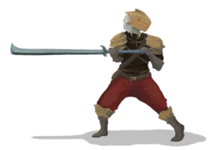
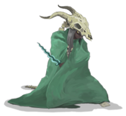
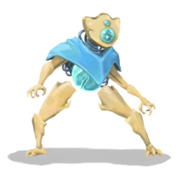
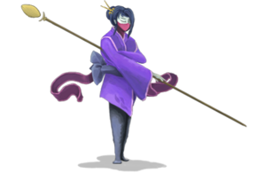

Introduction
Slay the Spire is a roguelike deck-building video game developed by American studio MegaCrit and published by Humble Bundle. In Slay the Spire, you can play as one of four characters and attempt to ascend a spire of multiple floors, created trhough procedural generation, or random generation, battling through enemies and bosses. Combat takes place through a collectible card game-based system, where you gain new cards as rewards from combat and other means, requiring you to use strategies of deck-building games to construct an effective deck to complete the climb. Slay the Spire has been well-received. It was nominated for several accolades in 2019, and is considered the game that launched a number of roguelike deck-building games.
Characters
When Slay the Spire was originally released, there was 3 characters to choose from to embark on your quest - Ironclad, Silent, and Defect. Recently, The game released an update and introduced a fourth character known as the Watcher. Each character has their own unique starting relic and their own array of cards you can find during your climb.
- Ironclad
- The Ironclad class wields an arsenal of powerful strikes, boasts formidable defensive options, and draws fiendish srength from his demonic benefactors to empower himself in various ways. The Ironclad class has the highest starting health out of all the classes, which suits the brute strength playstyle of the class. A majority of the archetypes for this class are centered around dealing massive damage to destroy your enemies, rather than relying on fancy tricks. But if you also prefer becoming an immovable force of nature, the Ironclad has that covered as it also has cards that focus on accumulating high amounts of armour.
- Silent
- The Silent class is a huntress themed on a rogue fantasy build. This cunning character weakens her foes with numerous cuts and poisons, while using cheap tricks and agility to avoid their attacks. With many powerful cards that draw and discard, the Silent ensures that she will always be one step ahead of her enemies. The two major archetypes for the Silent class include the poison archetype and the shiv archetype (shivs are like chip damage). So if you enjoy pulling off combos with a bunch of cards, stacking them all together and taking down your enemies without even a scratch, then the Silent class is for you.
- Defect
- The Defect class was once just another ancient automaton roaming the tower, searching for it's next target, but it has since gained sentience and seeks its way out of the Spire it once roamed. It attacks foes with a high-tech arsenal, an array of Powers, and elemental evocations. The Defect has a unique mechanic which is the Orbs. The Defect uses cards and Relics to channel the power of these elemental spheres, either activating their passive abilities or envoking them to release a one-time burst. This class' archetypes focus on building up damage overtime through the use of passive effects and Powers - affects that permanently last until the end of a battle. If you enjoy a more cyborg-like playstyle where you keep adding to your abilities, then the Defect is perfect for you.
- Watcher
- The Watcher class is a monk that utilizes the effects of her different stances to her advantage, boasts an arsenal oriented around deck control via scrying, retaining, and energy(mana) generation, as well as unique focus on mid- combat card generation. The Watcher has multiple archetypes but most of them are focused around manipulating your deck and the cards that you have - either adding new cards to your deck or transforming the ones already in it. The Watcher also has a unique stance mechanic that allows you to release bursts of damage and mana generation. If you are into technical mechanics like the ones mentioned, then you should give the Watcher a try.